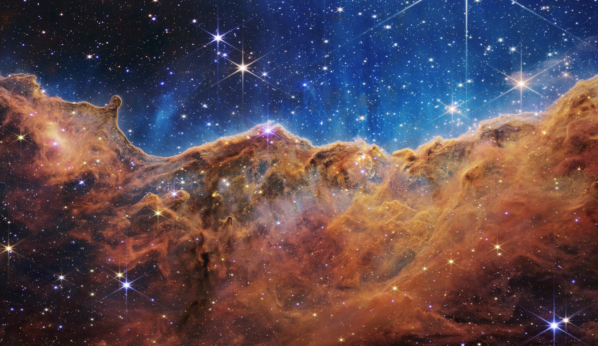

Behold! The Carina Nebula!
A wonder of the universe.
So Glittery. So Shiny. A home for new stars to be born.

"Why is this cloud of space dust that's quadrillions of miles away even important!?" I hear you ask.
Here's a few reasons why:
- It's pretty.
- Because I like it.
Some more reasons:
- Because shut up
- Sparkles!!!!